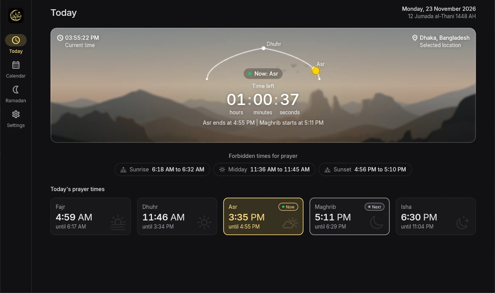

Muslim prayer times for your desktop
Offline prayer times, live countdowns, and reminders. Free for Windows and Linux.
Download from Microsoft Store
Windows 10 and 11
Awaiting certification

Offline prayer times, live countdowns, and reminders. Free for Windows and Linux.
Windows 10 and 11
Awaiting certification

See how much time is left and when the next prayer starts.
Get alerts when selected prayers start and before they end.
See when to avoid voluntary prayer, with Hadith references.
Browse daily prayer and fasting times.
Switch between cities without redoing your prayer settings.
Start at sign-in, keep reminders in the tray, and customize text size and theme.
See Suhoor and Iftar countdowns and adjust your fasting times.
Control pop-ups and lock-screen alerts.
Open Settings → System → Notifications on Windows 11. On Windows 10, choose Notifications & actions. For missing alerts, check Do Not Disturb or Focus assist.
Open Settings → Notifications on GNOME or System Settings → Notifications on Cinnamon.
Keep Salah Waqt running in the window or tray to receive alerts.
Prayer times and reminders run on your computer.
Your settings and saved cities stay on your computer.
Salah Waqt doesn’t monitor your activity or send reports about how you use the app. There are no ads or accounts.
Use the Windows or Linux download button above to get the matching package.
Windows 10 and 11 (64-bit)
Windows_x64_Salah_Waqt_v1.0.0.zip.Microsoft Defender Antivirus found no threats in our scan of the Salah Waqt v1.0.0 Windows installer. You can also scan the downloaded ZIP before extracting it.
Microsoft Defender SmartScreen may show Windows protected your PC because the installer is unsigned. If SmartScreen only says the app is unrecognized, select More info, then Run anyway to continue. If Windows detects a threat or the option is unavailable, stop and contact us.
Installing for everyone requires administrator permission. Updates keep your settings.
To remove the app, go to Windows Settings → Apps → Salah Waqt → Uninstall. Setup attempts to remove your settings and startup entries. Other users' settings are kept.
Ubuntu 22.04+, Debian 12+, Linux Mint 21+ (64-bit Intel or AMD)
Linux_amd64_Salah_Waqt_v1.0.0.deb.Also supports LMDE 6+, Pop!_OS 22.04+, Zorin OS 17+, and elementary OS 7+.
Run this in your download folder. Replace VERSION with the version in the filename.
sudo apt install ./Linux_amd64_Salah_Waqt_vVERSION.debTo uninstall and keep your settings, run:
sudo apt remove salah-waqtTo uninstall and delete your settings, run:
sudo apt purge salah-waqtEmail us for help with Salah Waqt, to report a problem, or to share feedback.